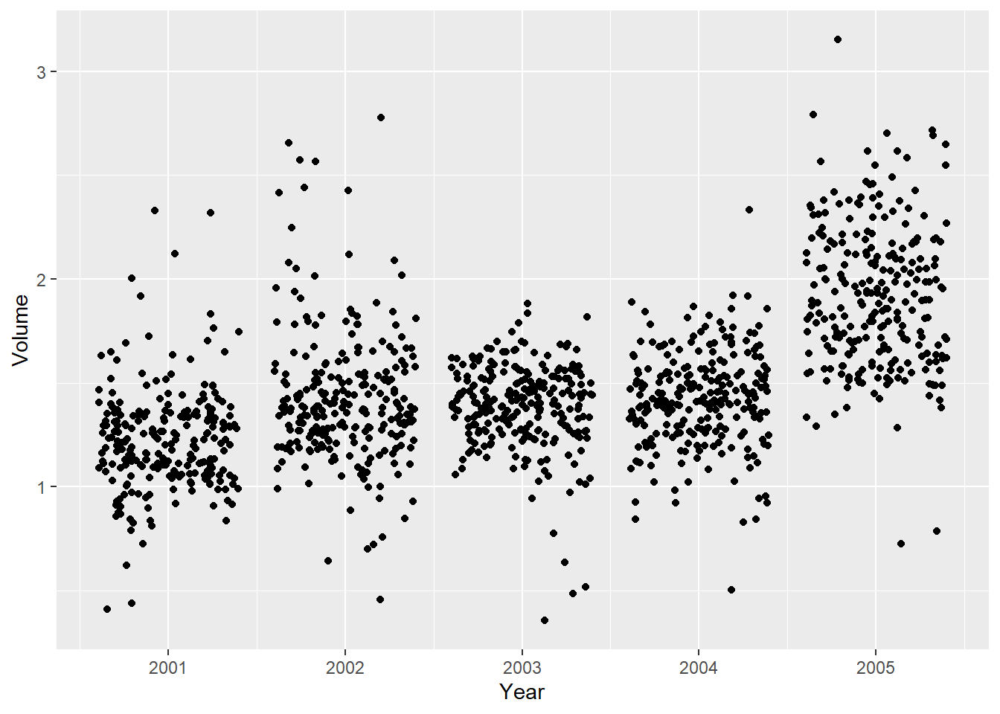

library(tidymodels)
library(ISLR) # For the Smarket data set
library(ISLR2) # For the Bikeshare data set
library(discrim)Lab 03
Classification
Getting started
Go to our RStudio and create a new R project inside your class folder.
YAML:
Create a .qmd file for your lab, make sure the author is your name, and Render the document.
Packages
In this lab we will work with four packages: ISLR (and ISLR2) which are packages that accompany your textbook, tidyverse which is a collection of packages for doing data analysis in a “tidy” way, tidymodels a collection of packages for statistical modeling, discrim which has some of our models in it.
This chapter will use parsnip for model fitting and recipes and workflows to perform the transformations.
The Stock Market Data
We will be examining the Smarket data set for this lab. It contains a number of numeric variables plus a variable called Direction which has the two labels "Up" and "Down". Before we do on to modeling, let us take a look at the correlation between the variables.
To look at the correlation, we will use the corrr package. The correlate() function will calculate the correlation matrix between all the variables that it is being fed. We will therefore remove Direction as it is not numeric. Then we pass that to rplot() to quickly visualize the correlation matrix. I have also changed the colours argument to better see what is going on.
library(corrr)
cor_Smarket <- Smarket %>%
select(-Direction) %>%
correlate()
rplot(cor_Smarket, colours = c("indianred2", "black", "skyblue1"))And we see that these variables are more or less uncorrelated with each other. The other pair is Year and Volume that is a little correlated.
If you want to create heatmap styled correlation chart you can also create it manually.
library(paletteer)
cor_Smarket %>%
stretch() %>%
ggplot(aes(x, y, fill = r)) +
geom_tile() +
geom_text(aes(label = as.character(fashion(r)))) +
scale_fill_paletteer_c("scico::roma", limits = c(-1, 1), direction = -1)If we plot Year against Volume we see that there is an upwards trend in Volume with time.
ggplot(Smarket, aes(Year, Volume)) +
geom_jitter(height = 0)
Exercises
Data Split
- Split the data into training and testing sets with 70% in the training set.
Answer the following in questions 2 through 6:
- Fit the model using Lag1-5 and volume to predict direction.
- What are the model assumptions?
- Check all of the assumptions.
- Assess your model on the testing set with accuracy, the ROC curve, and the ROC AUC and give the confusion matrix.
Logistic Regression HINT: For linearity in logistic, you will need to create bins for each predictor, say 5 bins, then check the empirical probabilities for each bin.
LDA
QDA
Naive Bayes
K Nearest Neighbors
Comparing multiple models
We have fit a lot of different models in this lab. And we were able to calculate the performance metrics one by one, but it is not ideal if we want to compare the different models. Below is an example of how you can more conveniently calculate performance metrics for multiple models at the same time.
Start of by creating a named list of the fitted models you want to evaluate. I have made sure only to include models that were fitted on the same parameters to make it easier to compare them.
models <- list("logistic regression" = lr_fit3,
"LDA" = lda_fit,
"QDA" = qda_fit,
"KNN" = knn_fit)Next use imap_dfr() from the purrr package to apply augment() to each of the models using the testing data set. .id = "model" creates a column named "model" that is added to the resulting tibble using the names of models.
preds <- imap_dfr(models, augment,
new_data = Smarket_test, .id = "model")
preds %>%
dplyr::select(model, Direction, .pred_class, .pred_Down, .pred_Up)We have seen how to use accuracy() a lot of times by now, but it is not the only metric to use for classification, and yardstick provides many more. You can combine multiple different metrics together with metric_set()
multi_metric <- metric_set(accuracy, sensitivity, specificity)and then the resulting function can be applied to calculate multiple metrics at the same time. All of the yardstick works with grouped tibbles so by calling group_by(model) we can calculate the metrics for each of the models in one go.
preds %>%
group_by(model) %>%
multi_metric(truth = Direction, estimate = .pred_class)The same technique can be used to create ROC curves.
preds %>%
group_by(model) %>%
roc_curve(Direction, .pred_Down) %>%
autoplot()- Use the above code to fit all models as once and them compare them according to accuracy, ROC, and ROC AUC.